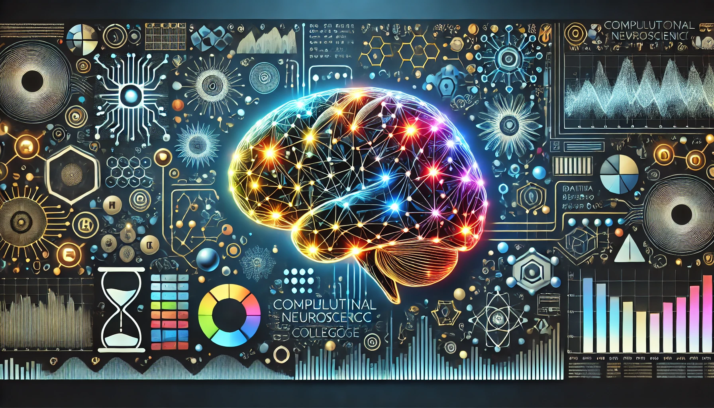

Course material
Calendar - Spring 2025
Thursday January 23 - First Day of Classes - A kind of impalpability to this whole business Tuesday January 28 - Is your brain...
William & Mary 400-level discussion/capstone course
a 400-level discussion/capstone course at William & Mary. A static, browsable edition of the course site exported from WordPress.

Core course pages
Course material
Thursday January 23 - First Day of Classes - A kind of impalpability to this whole business Tuesday January 28 - Is your brain...
Course material
Computational Neuroscience (APSC 450) Spring 2025 ISC 0280 - Tuesday & Thursday - 2:00-3:20pm Greg Conradi Smith - Applied Science, Neuroscience & CAMS Biomathematics...
Course material
Do not distribute beyond W&M. Abbott, L.F. and Nelson, S.B., 2000. Synaptic plasticity: taming the beast. Nature neuroscience , 3 (11s), p.1178. [PDF] Abbott,...
Course material
Course material
The term project will involve independent library research and deep intellectual engagement with computational neuroscience topic of interest to you. As a deliverable that...
Course material
Course material
A bibliography of computational neuroscience books and monographs . The Uri Alon Lab Collection of Complex Networks Nature.com / Subject / Computational Neuroscience Ross...
Course material
Abraham , T., 2016. Rebel Genius: Warren S. McCulloch's Transdisciplinary Life in Science . MIT Press. [ Amazon ] Anderson , James A. and...
13 selected pages